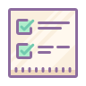
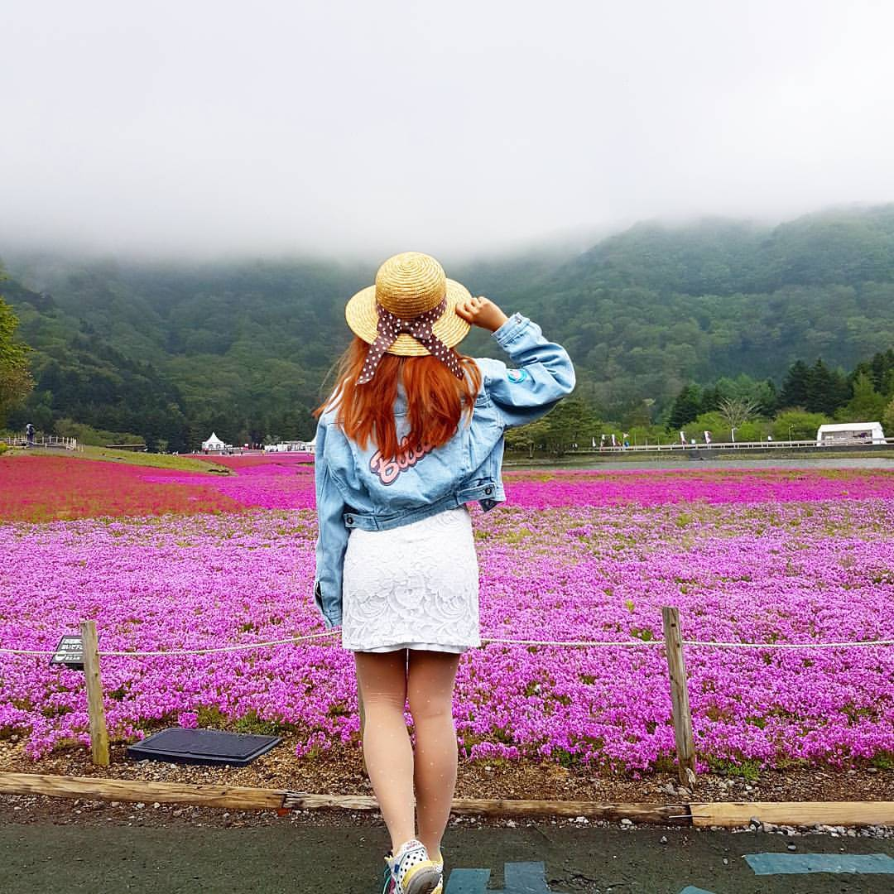
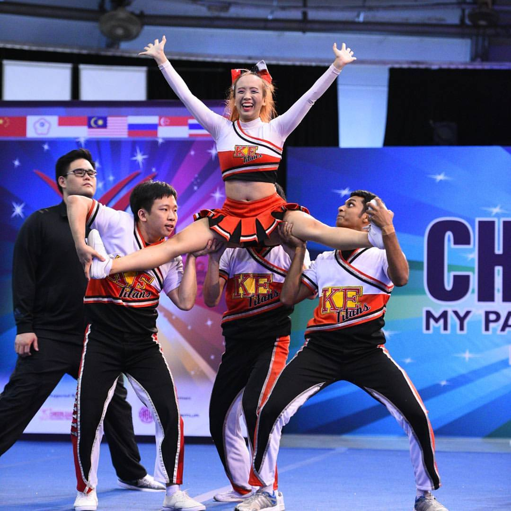
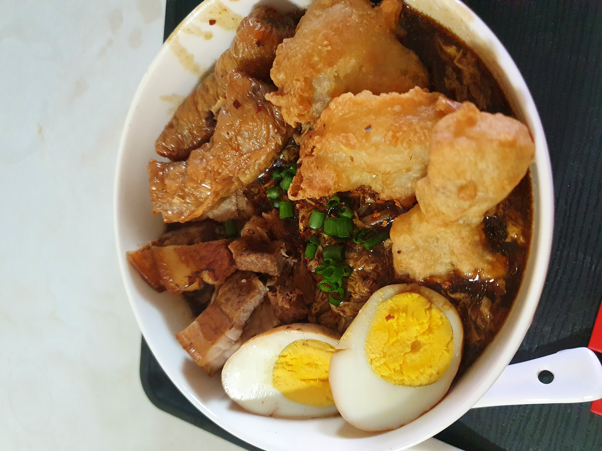
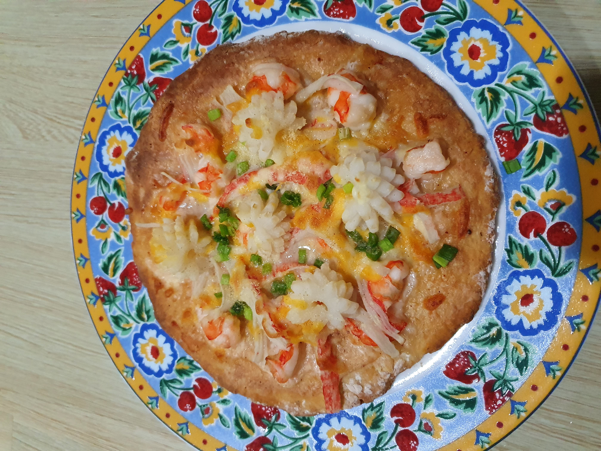
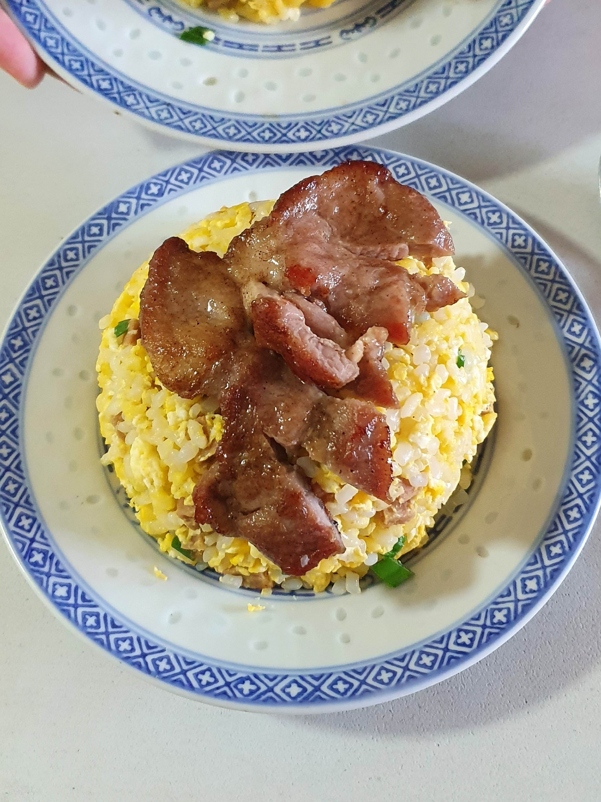

About Me

Skills
Figma/Figjam
User Research
Wireframing
Prototyping
Usability Testing
Project Management
Adobe Illustrator
Adobe Photoshop
Basic HTML/CSS
Github
Education
PaCE@NTU, SkillsUnion
(SCTP) UX Design and Digital Product Management Certification
- Redesigned prototype reduced time taken to complete booking from 2 minutes to 1 minute on average compared to current mobile application
- Featured in graduation ceremony project showcase
- Capstone project: ComfortDelGro Zig mobile app
NATIONAL UNIVERSITY OF SINGAPORE
Bachelor of Science (Honours) Pharmacy, 2017
Project Management Institute
Certified Associate in Project Management (CAPM)®
Experience
Better.sg
- Member of non-profit volunteer organisation that drives projects to use technology for social good
- In the midst of working on a few projects in areas of sustainability, eldercare and mental health
National University Health System
Senior Medical Informatics Specialist, Team Lead
- Involved in Next Generation Electronic Medical Records (NGEMR) project to harmonise processes across major hospitals in Singapore
Tan Tock Seng Hospital
Senior Pharmacist
- Collaborated with healthcare professionals from different disciplines to manage patient care
Click here for the detailed version of my resume
Fun facts about me!
I speak Japanese

One of my favourite countries to visit because there’s always something new to discover!
I used to do cheerleading

First time participating in a competition!
In my free time, you’ll find me in the gym or at home trying out new recipes.
Here’s some of the things I’ve made:


